Capsule Networks
Giới thiệu, tìm hiểu và giải thích về ý tưởng đằng sau mạng Capsule.
Source code here
Mạng CNN(Convolutional Neural Networks) hay mạng nơ-ron tích chập mạng nơ-ron xếp chồng nhiều lớp, mỗi lớp gồm các toán tử tích chập (Convolution), giảm mẫu (Subsampling) và phi tuyến (Nonlinearly).
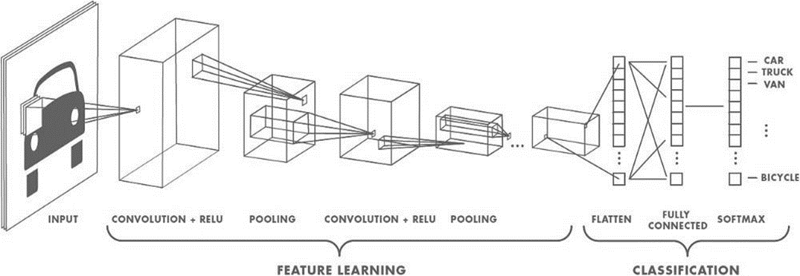
Lớp Convolution: Lọc thông tin không quan trọng và trích chọn đặc trưng cục bộ nổi bật bằng cách sử dụng các Kernel được huấn luyện.
Lớp Subsampling hay Pooling: Gộp lại (pool) những đầu ra có cùng loại gần nhau của lớp Convolution.
Nonlinearly: Tăng khả năng mô hình hóa mối quan hệ đầu vào-đầu ra phức tạp.
CNN có các đặc điểm phù hợp cho phân tích, hiểu dữ liệu ảnh:
CNN sử dụng nhiều lớp của những bộ phát hiện đặc trưng được học (là các kernel chạy qua không gian ma trận của ảnh).
Các bộ phát hiện đặc trưng có tính cục bộ, mỗi loại tính toán trên lần lượt các vùng trong ảnh.
Phạm vi không gian lớn hơn ở các lớp sâu hơn hay các thông tin mức cao sẽ ở lớp cao hơn.
x Các lớp trích xuất đặc trưng được xen kẽ với các lớp giảm mẫu, gộp lại (pool) những đầu ra của các bộ phát hiện đặc trưng cùng loại gần nhau.
Ưu điểm của lớp Pooling:
Giảm số lượng đầu vào cho lớp trích chọn đặc trưng tiếp theo (giảm kích thước của activation maps). Từ đó cho phép có nhiều loại đặc trưng (kernel) trong lớp tiếp theo và thêm nhiều lớp hơn, do việc giảm chi phí tính toán
Cho một lượng nhỏ khả năng bất biến tịnh tiến tại mỗi lớp. Do yêu cầu thực tế là nhãn cuối cùng cần bất biến điểm nhìn (viewpoint-invariant). Vị trí chính xác của hầu hết các đặc trưng kích hoạt được bỏ qua.
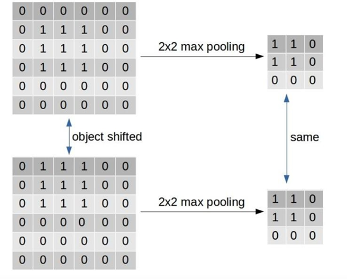
Hình 2: Đầu ra của Max-pooling khi đối tượng tịnh tiến khoảng nhỏ.
Nếu một thực thể trong ảnh bị dịch đi một lượng nhỏ, activation map tương ứng với thực thể đó sẽ dịch chuyển tương đương. Tuy nhiên, đầu ra của lớp Pooling (vd: Max-Pooling) của activation map vẫn không bị thay đổi.
Nếu không có lớp Pooling, CNN sẽ chỉ fit những ảnh rất giống với ảnh trong tập huấn luyện.
Tuy nhiên, “Cách điểu diễn dữ liệu nội bộ của mạng CNN không tính đến các phân cấp không gian quan trọng giữa các đối tượng đơn giản và phức tạp“. Điều này có nghĩa mạng CNN sẽ mất đi các quan hệ không gian giữa các phần của đối tượng. Xem ví dụ dưới đây, mạng CNN vẫn dự đoán 2 này ảnh có chứa người, điều này là không đúng.
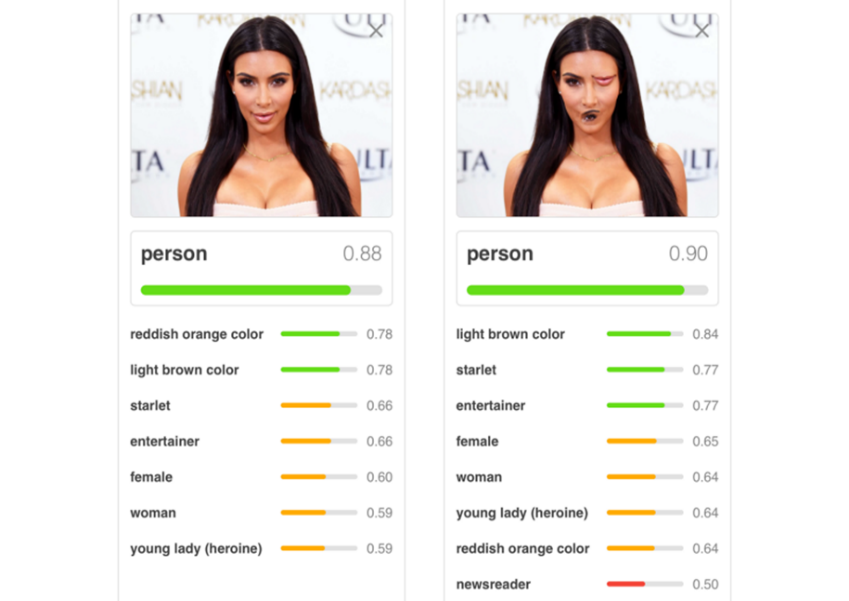
Hình 3: Hình ảnh đánh lừa mạng CNN.
Subsampling làm mất đi các quan hệ không gian chính xác giữa các bộ phận của khuôn mặt như mũi và miệng. Các quan hệ không gian là cần thiết cho nhận dạng đặc tính. Việc chồng chéo các nhóm Subsampling có thể giảm thiểu điều này.
CNN không thể ngoại suy từ hiểu biết về quan hệ không gian với điểm nhìn hoàn toàn mới.
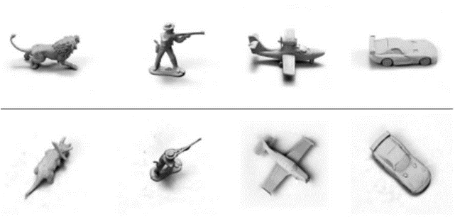
Hình 4: Các đối tượng ở các góc nhìn khác nhau.
Mạng CNN không có khả năng dự đoán được đối tượng khi đối tượng ở góc nhìn hoàn toàn khác so với hình ảnh đối tượng trong tập huấn luyện. Trong ví dụ hình ảnh trên mạng CNN suy ra được đối tượng dưới khi nó được học đối tượng phía trên.
Hai khái niệm quan trọng nhưng dễ nhầm lẫn khi nói về mạng CNN nói chung, thị giác máy tính nói chung. Nhìn chung chúng được hiểu như sau:
Một toán tử là bất biến (invariant) đối với một phép biến đổi khi ảnh hưởng của phép biến đổi đó không thể phát hiện được trong đầu ra của toán tử.
Một toán tử là đẳng biến (equinvariant) đối với một phép biến đổi khi ảnh hưởng của phép biến đổi đó có thể phát hiện được trong đầu ra của toán tử.
Subsampling có gắng làm cho các neural activities bất biến với những thay đổi nhỏ trong điểm nhìn. Đây là mục tiêu sai, do nhu cầu thực tế là nhãn cuối cùng cần được bất biến mọi điểm nhìn.
Hướng đi tốt hơn của mạng là nhắm tới equivariance. Những thay đổi trong điểm nhìn sẽ dẫn tới thay đổi tương ứng trong những neural activities. Trong hệ thống tri giác, trọng số của nó mã hóa tri thức bất biến điểm nhìn (viewpoint-invariant knowledge), chứ không phải là neural activities.
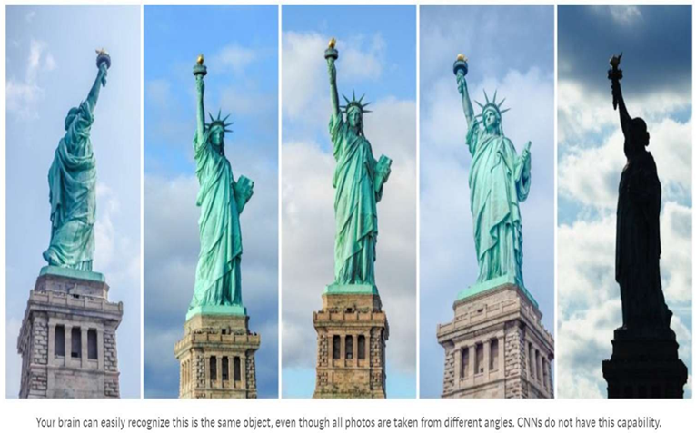
Hình 5: Một khả năng mà mạng CNN không có.
Có 2 loại đẳng biến:
‘Place-coded’ equivariance: Nếu một phần cấp thấp di chuyển đến một vị trí rất khác, nó sẽ được biểu diễn bởi một capsule khác.
‘Rate-coded’ equivariance: Nếu một phần chỉ di chuyển một khoảng cách nhỏ, nó sẽ được biểu diễn bởi cùng một capsule nhưng tư thế (pose) đầu ra của capsule sẽ thay đổi.
Các capsule cấp cao hơn có các phạm vi lớn hơn (đại điện vùng cho ảnh lớn hơn), do đó ‘place-coded’ equivariance mức độ thấp được chuyển đổi thành ‘rate-coded’ equivariance mức cao.
Không có lớp pooling, mạng CNN có khả năng «place-coded» equivariance với phép tịnh tiến.
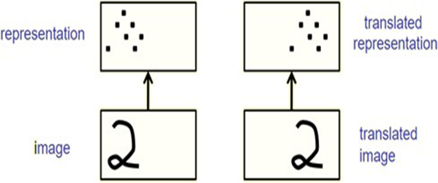
Hình 6: Mạng CNN đẳng biến với phép tịnh tiến.
Để đạt được bất biến, mạng neural hiện tại huấn luyện các mẫu dữ liệu với các điểm nhìn khác nhau. Điều này yêu cầu rất nhiều dữ liệu.
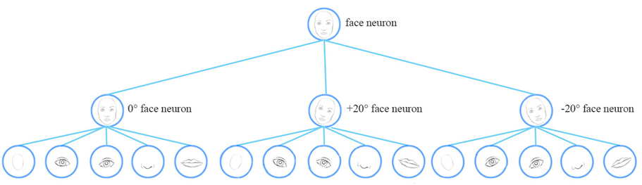
Hình 7: Các góc độ khác nhau của mặt người.
Để hiển thị một đối tượng dạng lưới (3D) thành các điểm ảnh trên màn hình, nó lấy tư thế (pose) của đối tượng và nhân nó với ma trận chuyển đổi. Điều này tạo ra tư thế của một phần của đối tượng trong một chiều thấp hơn (2D), đó là những gì thấy trên màn hình.
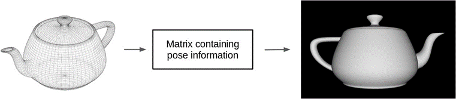
Vì vậy, các cấp cao hơn của một hệ thống thị giác sẽ trông giống như các biểu diễn được sử dụng trong đồ họa.
Các chương trình đồ họa sử dụng các mô hình phân cấp trong đó cấu trúc không gian được mô hình hóa bằng các ma trận (trọng số), đại diện cho mối quan hệ giữa đối tượng nói chung và tư thế của bộ phận. Những ma trận này hoàn toàn là bất biến-điểm nhìn.
Tuy nhiều tư thế của các bộ phần đã thay đổi, chúng ta có thể lấy lại tư thế của toàn bộ bằng cách sử dụng cùng một ma trận trọng số.
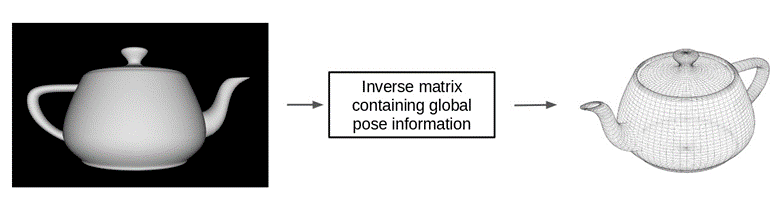
Điều này là độc lập hoàn toàn (và bất biến dịch) giữa các điểm nhìn của đối tượng trong một ma trận trọng số, không phải trong neural activity (equivariance).
Một ví dụ thực tế về Computer graphics và Inverse graphics.
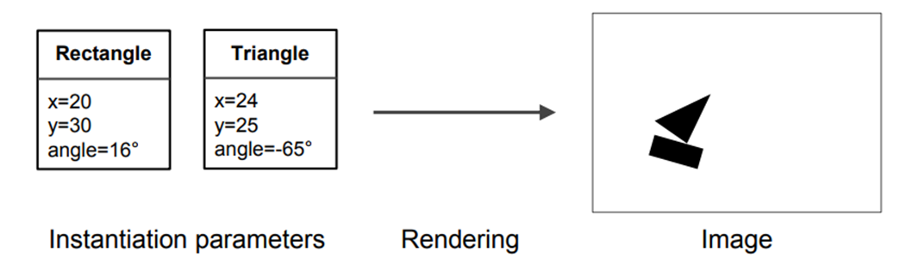
Hình 10: Ví dụ về computer graphics.
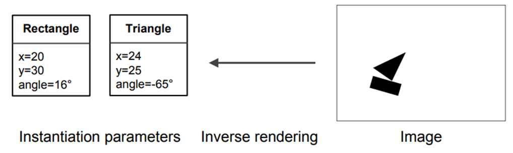
Hình 11: Ví dụ về inverse graphis.
Lấy ý tưởng tính chất đẳng biến của inverse graphis cho bài toán thị giác máy tính. Một mô hình dễ dàng hiểu thứ nó thấy chỉ là một cái nhìn khác về cái mà nó đã thấy trước đây. Bằng cách này, mô hình có thể học mà chỉ cần sử dụng một phần nhỏ dữ liệu mà CNN sẽ sử dụng.
Để mô tả cách lấy ý tưởng của Inverse graphis cho nhận dạng đối tượng gồm nhiều bộ phận (ví dụ: mặt có mũi, miệng...) xem hình ảnh dưới, hai lớp trong phân cấp của các bộ phận.
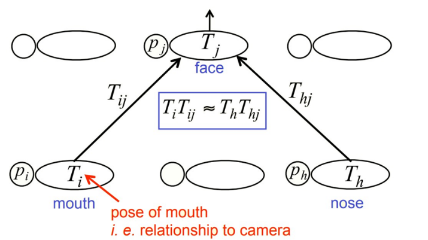
Thực thể cấp cao hơn sẽ có mặt nếu một số thực thể cấp thấp hơn có thể thống nhất về dự đoán (vote) của chúng cho tư thế của nó (thực thể cấp cao).
Trong đó:
Th: tư thế của mũi.
ph: xác suất mũi có mặt.
Thj, … : bất biến điểm nhìn.
Chính là những gì Capsules hoạt động!!!
Trích Transforming Autoencoders paper:
Instead of aiming for viewpoint invariance in the activities of “neurons” that use a single scalar output to summarize the activities of a local pool of replicated feature detectors, artificial neural networks should use local “capsules”.
Nhóm các neuron thực hiện rất nhiều tính toán nội bộ và sau đó đóng gói các kết quả của các tính toán này thành một vectơ nhỏ, được lấy cảm hứng từ mini-column trong não bộ.
Mỗi capsule học cách nhận ra một thực thể thị giác được định nghĩa ngầm trên một miền giới hạn các điều kiện quan sát và biến dạng.
Một capsule xuất ra 2 thông tin(được nhúng trong vectơ):
Xác suất mà thực thể có mặt trong miền giới hạn của nó.
Một bộ các “instantiation parameter”, tư thế (pose) tổng quát của đối tượng. Nó có thể bao gồm vị trí chính xác, ánh sáng và biến dạng của thực thể so với thực thể nó phù hợp đã được định nghĩa ngầm.
Trong bài báo Dynamic Routing Between Capsules, Capsules mã hóa xác suất phát hiện một đặc trưng bằng độ dài của vector đầu ra của chúng.
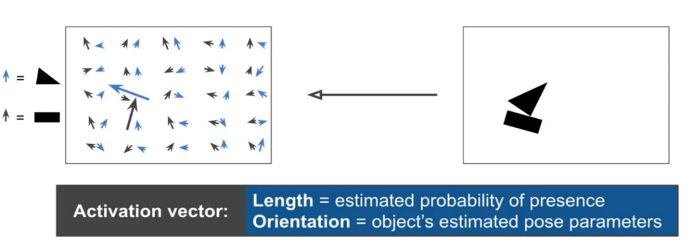
Hình 13: Capsules activations.
Capsules mã hóa xác suất phát hiện một đặc trưng bằng độ dài của vector đầu ra của chúng. Và trạng thái của đặc trưng được phát hiện được mã hóa theo hướng mà vectơ đó trỏ đến ("instantiation parameters").
Vì vậy, khi đặc trưng được phát hiện di chuyển xung quanh hình ảnh hoặc trạng thái của nó bằng cách nào đó thay đổi, xác suất vẫn giữ nguyên (độ dài vectơ không thay đổi), nhưng hướng của nó thay đổi.
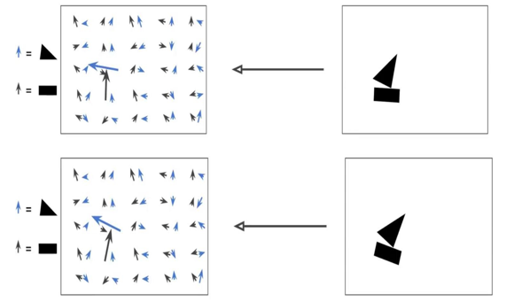
Đây là những gì Hinton đề cập đến về activities equivariance: các neuronal activities sẽ thay đổi khi một đối tượng di chuyển trên vùng xuất hiện có thể trong hình ảnh. Đồng thời, xác suất phát hiện vẫn không đổi, đó là dạng equivariance mà chúng ta nên hướng tới, và không phải là dạng được thực hiển bởi CNN với max pooling.
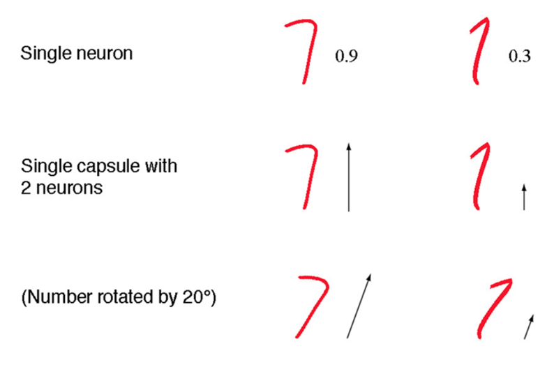
Capsules được sắp xếp theo các lớp. Cho u1, u2, u3 là vectơ đầu ra đến từ capsule của lớp bên dưới. Vectơ được gửi tới tất cả các bậc cha mẹ (capsule phía trên) có thể có trong mạng Neuron.
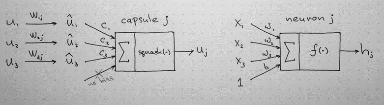
Chúng ta hãy giả định rằng các capsule cấp thấp hơn tương ứng phát hiện mắt, miệng và mũi và capsule cấp cao hơn phát hiện khuôn mặt.
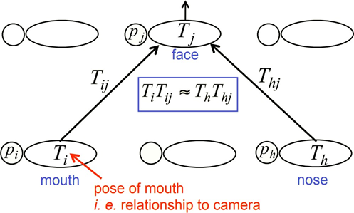
Sau đó các vectơ cấp thấp được nhân với các ma trận trọng số tương ứng W (được học trong quá trình training) mã hóa các mối quan hệ không gian và quan trọng khác giữa các đặc trưng cấp thấp hơn (mắt, miệng và mũi) và tính năng cao hơn (mặt). W thực hiện một biến đổi affine. Chúng ta nhận được vị trí dự đoán của đặc trưng cấp cao hơn,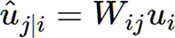
VD: Vị trí khuôn mặt được dự đoán theo vị trí mắt được phát hiện.
Nếu 3 dự đoán của các đặc trưng cấp thấp hơn này trỏ vào cùng một vị trí và trạng thái của khuôn mặt, thì có là một khuôn mặt ở đó.
Routing by Agreement tìm sự thống nhất của những dự đoán của các capsule cấp thấp để có được pose của capsule cấp cao.
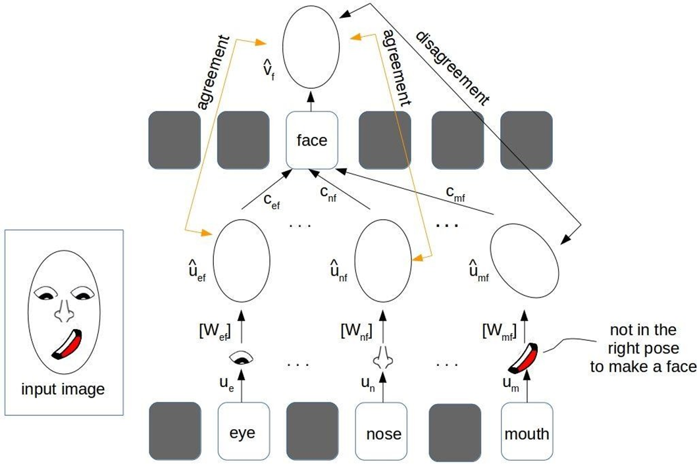
Hình 17: Ý nghĩa của Routing by Agreement.
Một trong các thuật toán Routing by Agreement được Hinton và cộng sự đưa ra là định tuyến động (dynamic routing).
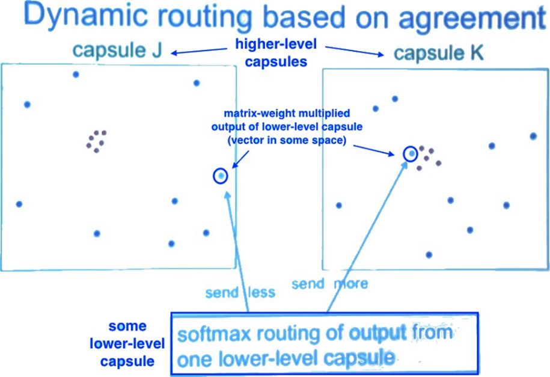
Cụ thể, chúng ta tính một tổng có trọng số sj với các trọng số cij, là hệ số coupling được train bởi dynamic routing (chi tiết phía dưới):
Chúng ta áp dụng hàm squashing
(phi tuyến) để đưa vector về khoảng từ 0 tới 1(chính
là xác suất phát hiện đặc trưng như đã nêu). Nó
không làm thay đổi hướng vector (pose):
Nó co lại các vector nhỏ thành 0 và các vec tơ dài thành các vectơ đơn vị. Do đó khả năng của mỗi capsule được xác định trong khoảng từ 0 tới 1.
Tính hệ số coupling:
Mã giả thuật toán dynamic routing:
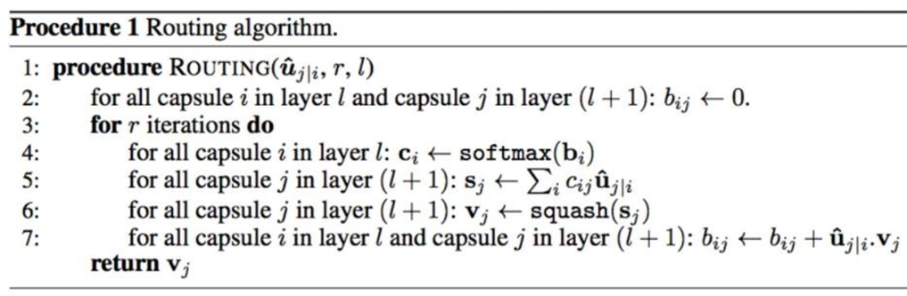
Hình 19: Mã giả định tuyến động.
Hoạt động của thuật toán định tuyến động.
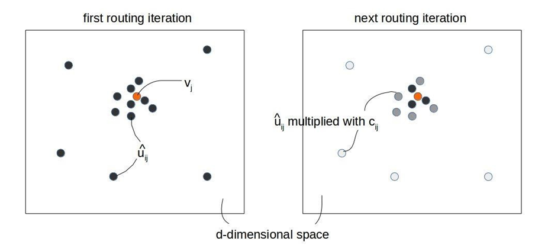
Hình 20: Hoạt động của định tuyến động.
Lưu ý rằng: các trọng số khác của mạng (ví dụ: Wij) vẫn được huấn luyến như mạng nơ-ron thông thường bằng thuật toán lan truyền ngược, tức là cố định khi đã huấn luyện mạng xong. Thuật toán Routing by Agreement được áp dụng để dự đoán capsule cha từ các caspule con thông qua các tính các hệ số c, s, v và b trong các quá trình training lẫn inference.
Tổng hợp so sánh giữa Capsule và Nơ-ron:
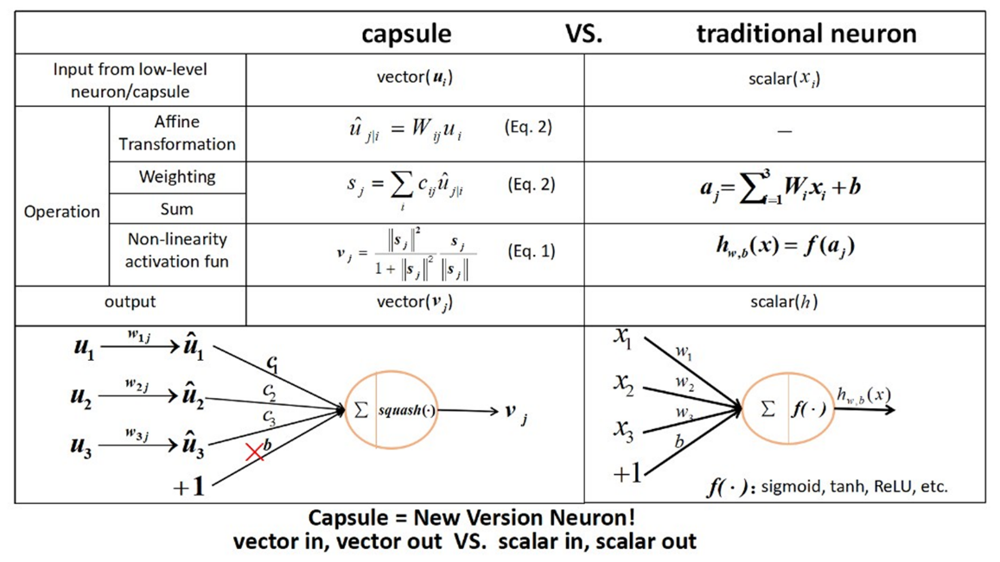
Kiến trúc mạng cho MNIST
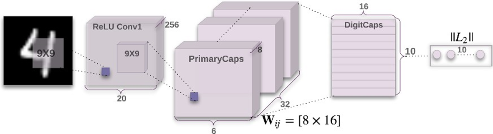
Hình 22: Kiến trúc mạng Capsule cho MNIST.
Lớp tích chập thứ nhất: Đây là lớp tích chập thông thường, ảnh đầu vào 28x28, 256 kernel 9x9. Đầu ra là 256 bản đồ đặc trưng 20x20.
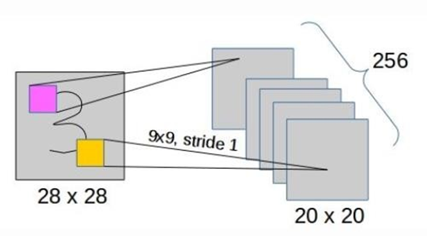
Hình 23: Lớp tích chập thứ nhất.
Lớp tích chập thứ 2 hay lớp PrimaryCaps:
Một lớp tích chập khác tạo ra 256 bản đồ kích hoạt 6x6.
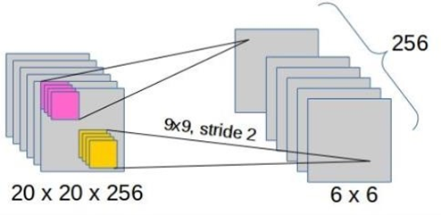
Hình 24: Lớp tích chập thứ hai.
Đầu ra của lớp này (6x6x256) được chuyển thành một bộ 32 bản đồ kích hoạt capsule với mỗi capsule có 8 chiều. Có tổng cộng 6*6*32=1152 capsule (mỗi capsule có 8 chiều).
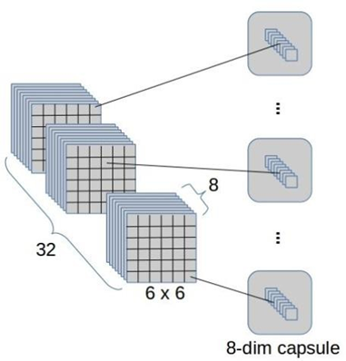
Lớp Capsule-to-capsule hay lớp DigitCaps hay lớp ClassCaps :
1152 capsule mức thấp (PrimaryCaps) được kết nối với 10 capsule mức cao (DigitCaps hay ClassCaps): Có 1152*10 = 11520 ma trận trọng số Wij.
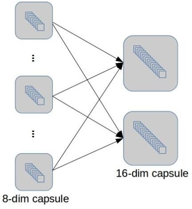
Hình 26: Lớp Capsule-to-capsule.
10 capsule mức cao (có 16 chiều) biển diễn 10 “thực thể số/lớp” cuối cùng.
Ở lớp này, các capsule sẽ thực hiện định tuyến động.
Cuối cùng, hàm mất mất được sử dụng được sử dụng là mất mát lề tách biệt Lc (separate margin loss) với mỗi c tương ứng với 1 DigitCap:
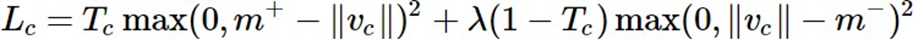
Trong đó, Tc=1 nếu một đối tượng của lớp c có mặt, m+=0.9, m−=0.1 và λ=0.5 (trọng số giảm) cho lớp vắng.
Hàm mất mát được hiểu như sau: Nếu có một đối tượng của lớp c có mặt thì ||vc|| không được nhỏ hơn 0,9, nếu không thì ||vc|| không được quá 0,1.
Mất mát tổng là tổng mất mát của tất cả các DigitCap.
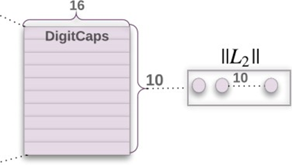
Hình 27: DigitCaps và hàm mất mất.
Ngoài ra, các tác giả còn đưa ra 1 phương pháp hiệu chỉnh mạng sử dụng reconstruction lấy cảm hứng từ mạng autoencoder. Mạng cho lớp reconstruction là mạng MLP đầu vào là DigitCaps tạo ra một đầu ra có 784=28*28 chiều, ảnh tái tạo.
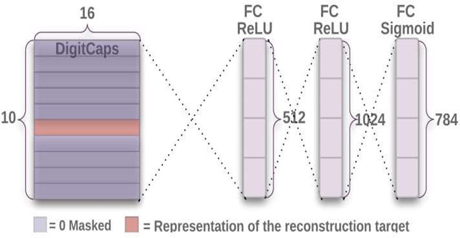
Lúc này, hàm mất mát gồm loss margin và reconstruction loss.
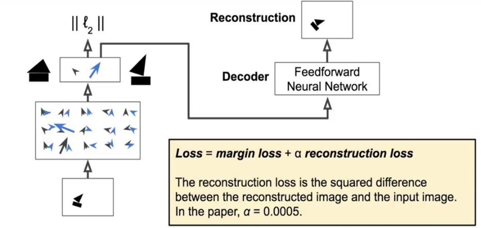
Ví dụ, ảnh đầu vào là số 3.
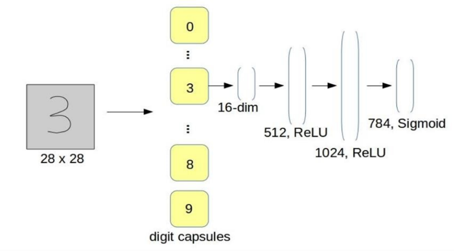
Hình 30: Ví dụ reconstruction.
Tổng kết, kiến trúc mạng đầy đủ với reconstruction
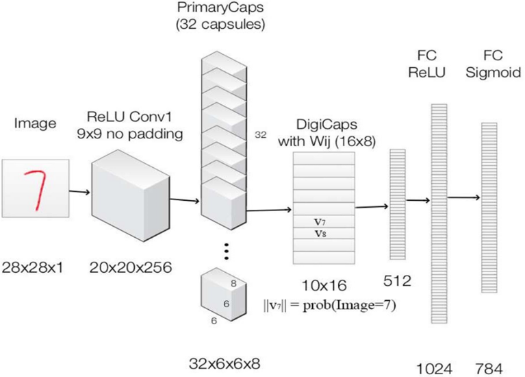
Hình 31: Kiến trúc mạng đầy đủ.
Liệt kê dạng thành dạng bảng.
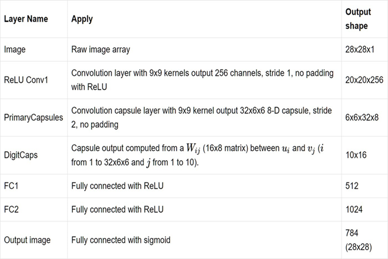
Hình 32: Kiến trúc mạng đầy đủ (bảng).
[1] Transforming auto-encoders, Geoffrey Hinton, Alex Krizhevsky and Sida D Wang, 2011
[2] Dynamic Routing Between Capsules, Sara Sabour, Nicholas Frosst and Geoffrey Hinton, Nov 2017
[3] Matrix capsules with EM routing, Geoffrey Hinton, Sara Sabour and Nicholas Frosst, 2018
[4] Aurélien Géron, Capsule Networks (CapsNets) – Tutorial
[5] https://hackernoon.com/what-is-a-capsnet-or-capsule-network-2bfbe48769cc
[6] https://jhui.github.io/2017/11/03/Dynamic-Routing-Between-Capsules/
[7] https://jhui.github.io/2017/11/14/Matrix-Capsules-with-EM-routing-Capsule-Network/
[8] https://kndrck.co/posts/capsule_networks_explained/
[9] https://becominghuman.ai/understand-and-apply-capsnet-on-traffic-sign-classification-a592e2d4a4ea
[10]https://aboveintelligent.com/ml-cnn-translation-equivariance-and-invariance-da12e8ab7049
[11]https://www.slideshare.net/kyuhwanjung/vuno-dl-seminarcapsnetskyuhwanjung20171109
[13]http://cs231n.github.io/convolutional-networks/